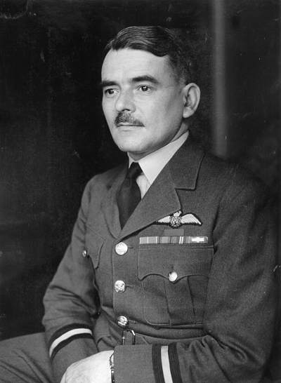
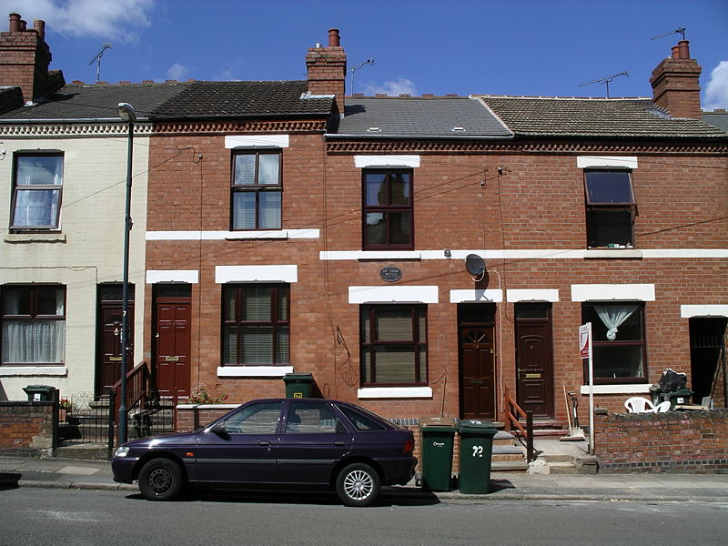
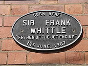

Sir Frank Whittle Frank Whittle was born on June 1, 1907, in Newcombe Road, Earlsdon, the son of a mechanical engineer. He joined the Royal Air Force as an aircraft apprentice at Cranwell in 1923, where he underwent three years of training as an aircraft mechanic. Then he entered the RAF College at Cranwell as an officer-cadet. Although he was just 21 years old by the time he graduated in 1928, Whittle was already focusing on ways to produce higher speeds and greater altitude for the propeller-driven aircraft of the time.   After graduating from Cranwell, Whittle became a fighter pilot and was then posted to an instructor's course at the Central Flying School. Here, despite day-to-day responsibilities, he painstakingly designed his first turbo-jet. Although sound in theory, Whittle's invention was in advance of its time in its material demands, and the Air Ministry rejected it. This was frustrating, but he did not allow this disappointment to interfere with his service career. He attended the Officers' Engineering Course at Henlow (1932-1933) and Cambridge University (1934-1937), where he completed his engineering training while continuing to seek interested investors for his engines. In 1935, having found no factories interested in his engine, he formed his own company together with two partners named Williams and Tinling. Power Jets, Ltd. opened its doors in 1936 and immediately took out further patents with financial backing from O.T. Falk and Company. By now the Royal Air Force was beginning to take Whittle's work seriously enough to transfer him to the special-duty list, enabling him to continue working on his engine. An experimental version ran in the British Thomson-Houston works at Rugby in April 1937, and by mid-1938 the feasibility of jet propulsion had been established. After the outbreak of World War II, development of the engine became dependent on Air Ministry finance. However, progress remained slow because of an ambiguous attitude by civil servants toward the unconventional organisation of Power Jets, Ltd. By April 1941 the Gloster Aircraft Company had completed an experimental airframe and this was fitted with an early Whittle engine for taxiing trials. After an airworthy engine had been fitted, the Gloster-Whittle E28/39 made its first test flight on May 15, 1941. Meanwhile, Whittle did not realise that he had a competitor for his invention in Nazi Germany. Hans von Ohain had not only produced a turbo-jet, but had also flown it in a Heinkel plane as early as 1939. But though his engine was the first to fly, von Ohain did not have the last word. Whittle had been generous with his research, sharing his technology with both the British Rolls Royce and the American General Electric Company. His foresight led to renewed interest in both the design of production engines and the airplane, which was to become the Gloster Meteor twin-engine jet fighter. In the US collaboration on the development of jet engines with the General Electric Company and the Bell Aircraft Corporation began in September 1941, while Britain was not far behind, putting its Meteor aircraft powered by Rolls-Royce "Welland" into service by May 1944. In 1946 Prime Minister Clement Attlee's Labour government nationalised Whittle's Power Jets company and forced it to limit its activities to components research. Angrily, Whittle and several co-workers resigned from the company, following up, two years later, with his retirement from the RAF with the rank of Air Commodore, an award of 100,000 pounds, and a knighthood. In 1976 after several mental breakdowns, Sir Frank emigrated to the US permanently to marry a retired U.S. Navy nurse named Hazel Hall and to take an appointment as a visiting research professor of Aerospace Engineering in the Division of Engineering and Weapons at the US Naval Academy, in Annapolis, Maryland. He was deep into new research in 1978 when the Federal Aviation Administration decided to honour him by giving him the Extraordinary Service Award, the highest accolade the office can bestow. It was a shining moment in an otherwise quiet appointment, which ended in September 1979. In 1986 Whittle was appointed a member of the Order of Merit (Commonwealth). He was made a Fellow of the Royal Society, and of the Royal Aeronautical Society, and in 1991 he and von Ohain were awarded the Charles Stark Draper Prize for their work on turbojet engines. Whittle died of lung cancer on 9 August 1996, at his home in Columbia, Maryland. He was cremated in America and his ashes were flown to England where they were placed in a memorial in a church in Cranwell.
|